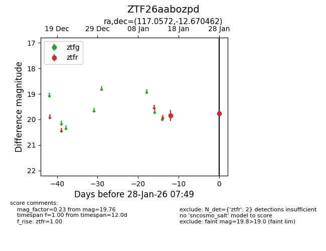
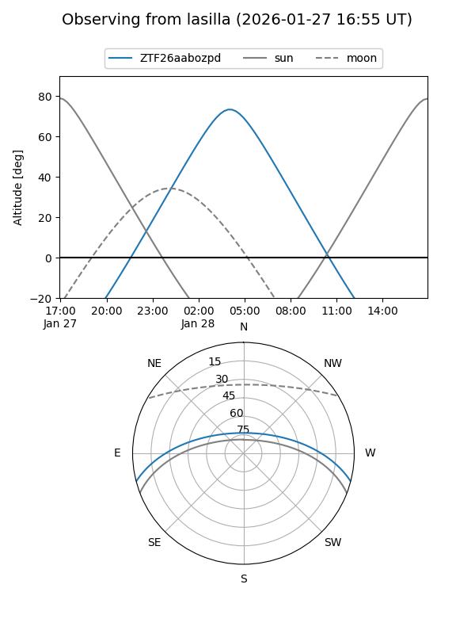
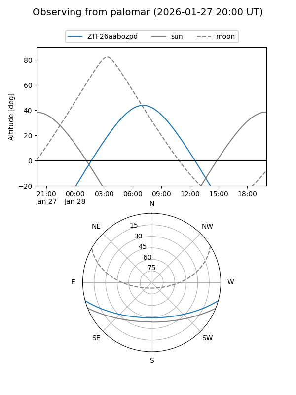

ZTF26aabozpd
Target ZTF26aabozpd at 2026-01-28 07:51
Aliases and brokers:
FINK: link
Lasair: link
ALeRCE: link
alt names
ZTF26aabozpd (ztf,fink_ztf)
Coordinates:
equatorial (ra, dec) = 117.0572,-12.67046
equatorial (HMS+DMS) = 07:48:13.73,-12:40:13.66
galactic (l, b) = (230.7676,+6.48561)
Flags:
Photometry:
last ztfr=19.76
2 ztfr detections
Lightcurve

Visibility


Additional plots